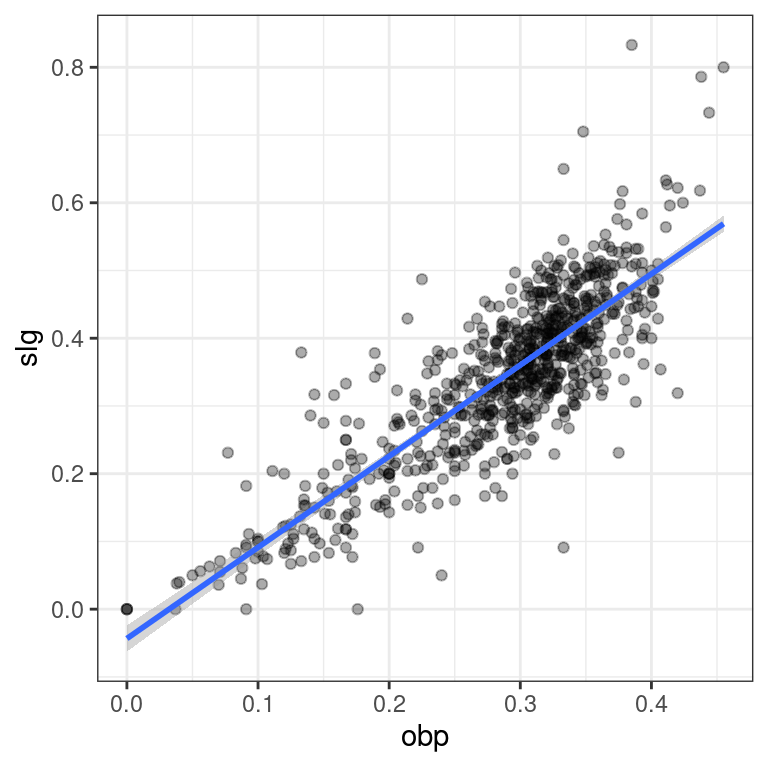

Chapter 6 Model Fit
In this final chapter, you’ll learn how to assess the “fit” of a simple linear regression model.
RMSE
The residual standard error reported for the regression model for poverty rate of U.S. counties in terms of high school graduation rate is 4.67. What does this mean?
The typical difference between the observed poverty rate and the poverty rate predicted by the model is about 4.67 percentage points.
The typical difference between the observed poverty rate and the poverty rate predicted by the model is about 4.67%.
*The model explains about 4.67% of the variability in poverty rate among counties.
- The model correctly predicted the poverty rate of 4.67% of the counties.
6.1 Standard error of residuals
One way to assess strength of fit is to consider how far off the model is for a typical case. That is, for some observations, the fitted value will be very close to the actual value, while for others it will not. The magnitude of a typical residual can give us a sense of generally how close our estimates are.
However, recall that some of the residuals are positive, while others are negative. In fact, it is guaranteed by the least squares fitting procedure that the mean of the residuals is zero. Thus, it makes more sense to compute the square root of the mean squared residual, or root mean squared error (RMSE). R calls this quantity the residual standard error.
To make this estimate unbiased, you have to divide the sum of the squared residuals by the degrees of freedom in the model. Thus,
\[\begin{equation} RMSE = \sqrt{\frac{\sum_i e_i^2}{d.f.}} = \sqrt{\frac{SSE}{d.f.}} \end{equation}\]
You can recover the residuals from mod with residuals(), and the degrees of freedom with df.residual().
Exercise
*View a summary() of mod.
Call:
lm(formula = wgt ~ hgt, data = bdims)
Residuals:
Min 1Q Median 3Q Max
-18.743 -6.402 -1.231 5.059 41.103
Coefficients:
Estimate Std. Error t value Pr(>|t|)
(Intercept) -105.01125 7.53941 -13.93 <2e-16 ***
hgt 1.01762 0.04399 23.14 <2e-16 ***
---
Signif. codes: 0 '***' 0.001 '**' 0.01 '*' 0.05 '.' 0.1 ' ' 1
Residual standard error: 9.308 on 505 degrees of freedom
Multiple R-squared: 0.5145, Adjusted R-squared: 0.5136
F-statistic: 535.2 on 1 and 505 DF, p-value: < 2.2e-16- Compute the mean of the
residuals()and verify that it is approximately zero.
[1] -3.665467e-16- Use
residuals()anddf.residual()to compute the root mean squared error (RMSE), a.k.a. residual standard error.
[1] 9.308046.2 Assessing simple linear model fit
Recall that the coefficient of determination (\(R^2\)), can be computed as
\[\begin{equation} R^2 = 1 − \frac{SSE}{SST} = 1 − \frac{Var(e)}{Var(y)}, \end{equation}\]
where \(e\) is the vector of residuals and \(y\) is the response variable. This gives us the interpretation of \(R^2\) as the percentage of the variability in the response that is explained by the model, since the residuals are the part of that variability that remains unexplained by the model.
The bdims_tidy data frame is the result of augment()-ing the bdims data frame with the mod for wgt as a function of hgt.
- Use the
summary()function to view the full results of mod.
Call:
lm(formula = wgt ~ hgt, data = bdims)
Residuals:
Min 1Q Median 3Q Max
-18.743 -6.402 -1.231 5.059 41.103
Coefficients:
Estimate Std. Error t value Pr(>|t|)
(Intercept) -105.01125 7.53941 -13.93 <2e-16 ***
hgt 1.01762 0.04399 23.14 <2e-16 ***
---
Signif. codes: 0 '***' 0.001 '**' 0.01 '*' 0.05 '.' 0.1 ' ' 1
Residual standard error: 9.308 on 505 degrees of freedom
Multiple R-squared: 0.5145, Adjusted R-squared: 0.5136
F-statistic: 535.2 on 1 and 505 DF, p-value: < 2.2e-16- Use the
bdims_tidydata frame to compute the \(R^2\) ofmodmanually using the formula above, by computing the ratio of the variance of the residuals to the variance of the response variable.
bdims_tidy %>%
summarize(var_y = var(wgt), var_e = var(.resid)) %>%
mutate(R_squared = 1 - var_e/var_y)# A tibble: 1 x 3
var_y var_e R_squared
<dbl> <dbl> <dbl>
1 178. 86.5 0.515This means that 51.4% of the variability in weight is explained by height.
Interpretation of \(R^2\)
The \(R^2\) reported for the regression model for poverty rate of U.S. counties in terms of high school graduation rate is 0.464.
How should this result be interpreted?
46.4% of the variability in high school graduate rate among U.S. counties can be explained by poverty rate.
46.4% of the variability in poverty rate among U.S. counties can be explained by high school graduation rate.
This model is 46.4% effective.
The correlation between poverty rate and high school graduation rate is 0.464.
6.3 Linear vs. average
The \(R^2\) gives us a numerical measurement of the strength of fit relative to a null model based on the average of the response variable:
\[\begin{equation} \hat{y}=\bar{y} \end{equation}\]
This model has an \(R^2\) of zero because \(SSE = SST\). That is, since the fitted values (\(\hat{y}_{null}\)) are all equal to the average (\(\bar{y}\)), the residual for each observation is the distance between that observation and the mean of the response. Since we can always fit the null model, it serves as a baseline against which all other models will be compared.
In Figure 6.1, we visualize the residuals for the null model (mod_null at left) vs. the simple linear regression model (mod_hgt at right) with height as a single explanatory variable. Try to convince yourself that, if you squared the lengths of the grey arrows on the left and summed them up, you would get a larger value than if you performed the same operation on the grey arrows on the right.
Figure 6.1: At left, the model based on overall average weight. At right, the simple linear regression model.
It may be useful to preview these augment()-ed data frames with glimpse():
Excercise
- Compute the sum of the squared residuals (\(SSE\)) for the null model
mod_null.
# A tibble: 1 x 1
SSE
<dbl>
1 178.- Compute the sum of the squared residuals (\(SSE\)) for the regression model
mod_hgt.
# A tibble: 1 x 1
SSE
<dbl>
1 86.56.4 Leverage
The leverage of an observation in a regression model is defined entirely in terms of the distance of that observation from the mean of the explanatory variable. That is, observations close to the mean of the explanatory variable have low leverage, while observations far from the mean of the explanatory variable have high leverage. Points of high leverage may or may not be influential.
The augment() function from the broom package will add the leverage scores (.hat) to a model data frame.
Excercise
- Use
augment()to list the top 6 observations by their leverage scores, in descending order.
mod <- lm(slg ~ obp, data = mlbbat10)
# Rank points of high leverage
mod %>%
augment() %>%
arrange(desc(.hat)) %>%
head()# A tibble: 6 x 8
slg obp .fitted .resid .hat .sigma .cooksd .std.resid
<dbl> <dbl> <dbl> <dbl> <dbl> <dbl> <dbl> <dbl>
1 1 1 1.12 -0.120 0.0184 0.137 0.00729 -0.882
2 1 1 1.12 -0.120 0.0184 0.137 0.00729 -0.882
3 1 1 1.12 -0.120 0.0184 0.137 0.00729 -0.882
4 1 1 1.12 -0.120 0.0184 0.137 0.00729 -0.882
5 4 1 1.12 2.88 0.0184 0.108 4.22 21.2
6 1 1 1.12 -0.120 0.0184 0.137 0.00729 -0.8826.5 Influence
As noted previously, observations of high leverage may or may not be influential. The influence of an observation depends not only on its leverage, but also on the magnitude of its residual. Recall that while leverage only takes into account the explanatory variable (\(\hat{x}\)), the residual depends on the response variable (\(\hat{y}\)) and the fitted value (\(\hat{y}\)).
Influential points are likely to have high leverage and deviate from the general relationship between the two variables. We measure influence using Cook’s distance, which incorporates both the leverage and residual of each observation.
- Use
augment()to list the top 6 observations by their Cook’s distance (.cooksd), in descending order.
# A tibble: 6 x 8
slg obp .fitted .resid .hat .sigma .cooksd .std.resid
<dbl> <dbl> <dbl> <dbl> <dbl> <dbl> <dbl> <dbl>
1 4 1 1.12 2.88 0.0184 0.108 4.22 21.2
2 0 1 1.12 -1.12 0.0184 0.133 0.638 -8.25
3 0 1 1.12 -1.12 0.0184 0.133 0.638 -8.25
4 0 1 1.12 -1.12 0.0184 0.133 0.638 -8.25
5 0 1 1.12 -1.12 0.0184 0.133 0.638 -8.25
6 1.67 0.667 0.750 0.917 0.00676 0.134 0.154 6.726.6 Removing outliers
Observations can be outliers for a number of different reasons. Statisticians must always be careful—and more importantly, transparent—when dealing with outliers. Sometimes, a better model fit can be achieved by simply removing outliers and re-fitting the model. However, one must have strong justification for doing this. A desire to have a higher \(R^2\)is not a good enough reason!
In the mlbBat10 data, the outlier with an OBP of 0.550 is Bobby Scales, an infielder who had four hits in 13 at-bats for the Chicago Cubs. Scales also walked seven times, resulting in his unusually high OBP. The justification for removing Scales here is weak. While his performance was unusual, there is nothing to suggest that it is not a valid data point, nor is there a good reason to think that somehow we will learn more about Major League Baseball players by excluding him.
Nevertheless, we can demonstrate how removing him will affect our model.
- Use
filter()to create a subset ofmlbBat10callednontrivial_playersconsisting of only those players with at least 10 at-bats andOBPof below 0.500.
- Fit the linear model for
SLGas a function ofOBPfor thenontrivial_players. Save the result asmod_cleaner.
- View the
summary()of the new model and compare the slope and \(R^2\) to those ofmod, the original model fit to the data on all players.
Call:
lm(formula = slg ~ obp, data = nontrivial_players)
Residuals:
Min 1Q Median 3Q Max
-0.31383 -0.04165 -0.00261 0.03992 0.35819
Coefficients:
Estimate Std. Error t value Pr(>|t|)
(Intercept) -0.043326 0.009823 -4.411 1.18e-05 ***
obp 1.345816 0.033012 40.768 < 2e-16 ***
---
Signif. codes: 0 '***' 0.001 '**' 0.01 '*' 0.05 '.' 0.1 ' ' 1
Residual standard error: 0.07011 on 734 degrees of freedom
Multiple R-squared: 0.6937, Adjusted R-squared: 0.6932
F-statistic: 1662 on 1 and 734 DF, p-value: < 2.2e-16[1] 0.6936567[1] 0.6635126- Visualize the new model with
ggplot()and the appropriategeom_*()functions.
ggplot(data = nontrivial_players, aes(x = obp, y = slg)) +
geom_point(alpha = 0.33) +
geom_smooth(method = "lm") +
theme_bw()`geom_smooth()` using formula 'y ~ x'
6.7 High leverage points
Not all points of high leverage are influential. While the high leverage observation corresponding to Bobby Scales in the previous exercise is influential, the three observations for players with OBP and SLG values of 0 are not influential.
This is because they happen to lie right near the regression anyway. Thus, while their extremely low OBP gives them the power to exert influence over the slope of the regression line, their low SLG prevents them from using it.
- The linear model,
mod, is available in your workspace. Use a combination ofaugment(),arrange()with two arguments, andhead()to find the top 6 observations with the highest leverage but the lowest Cook’s distance.
# A tibble: 6 x 8
slg obp .fitted .resid .hat .sigma .cooksd .std.resid
<dbl> <dbl> <dbl> <dbl> <dbl> <dbl> <dbl> <dbl>
1 1 1 1.12 -0.120 0.0184 0.137 0.00729 -0.882
2 1 1 1.12 -0.120 0.0184 0.137 0.00729 -0.882
3 1 1 1.12 -0.120 0.0184 0.137 0.00729 -0.882
4 1 1 1.12 -0.120 0.0184 0.137 0.00729 -0.882
5 1 1 1.12 -0.120 0.0184 0.137 0.00729 -0.882
6 1 1 1.12 -0.120 0.0184 0.137 0.00729 -0.882